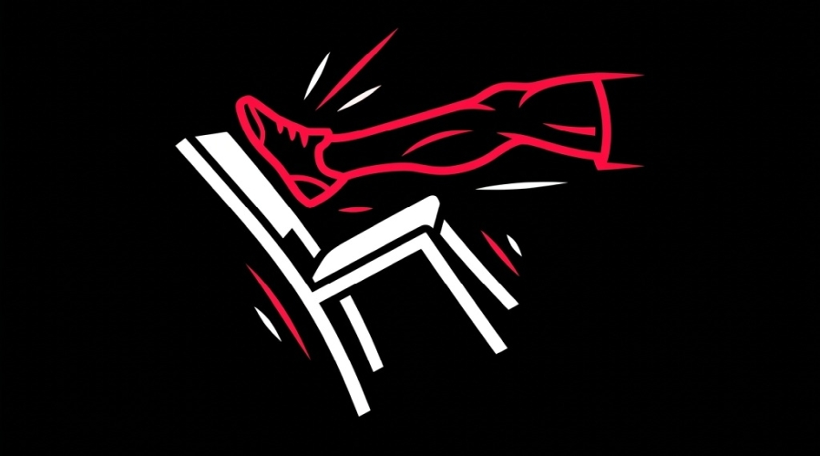
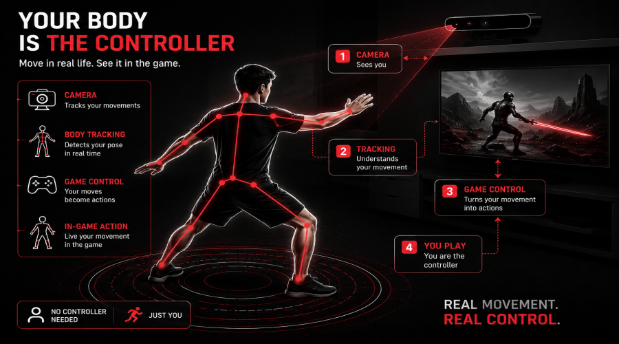
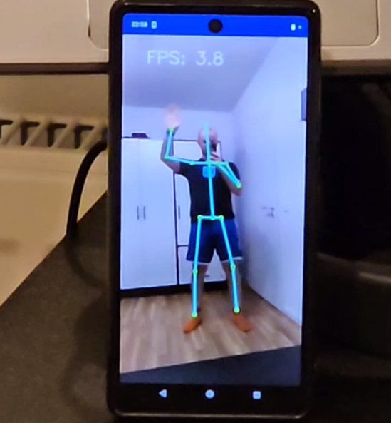
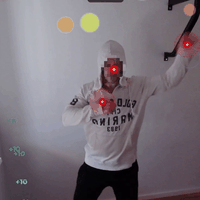
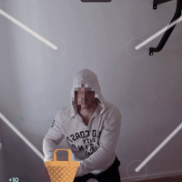

🧘 How I Healed My Back With Computer Vision
Gamifying physical therapy with Pose Estimation.

Every developer goes through this. One fine morning, you try to roll out of bed and realize your lower back is making the exact same sound as an old wooden dresser being dragged across a concrete floor.
I'm not the youngest person in the world (apparently I am not ha ha ha), and work as a Computer Vision engineer, and my typical workday lasts anywhere from 10 to 12 hours. I spend almost all of that time glued to a chair, adopting shapes and postures that directly contradict the laws of human anatomy. A couple of months ago, my spine staged a full-blown rebellion. It wasn't just a mild ache; it was a formal declaration of independence from my lower back.
I tried to fix it the standard way. I downloaded one of those polite "Time to stretch!" mobile apps. You know what happens after three days? You start to harbor a deep, burning resentment toward those push notifications. They always trigger right in the middle of a complex debugging flow. You angrily tap "Remind me in 15 minutes" and keep sitting. Standard stretching routines felt like a chore: more boring than reviewing someone's undocumented pull request.
So I thought: I'm a Computer Vision guy. Why not make my webcam track my movements and turn these boring stretches into something interactive?

Attempt #1: The Mobile Trap
My first idea was to build a mobile app. The plan seemed simple: put your phone on the desk, let the front camera scan your body, you jump around in front of it, profit.
But reality caught up quickly. First off, optimizing real-time neural network pose tracking on mobile apps is a nightmare. On average phones, the frame rate looked like a slide show from a family vacation. A reaction-based game running at 4 FPS is more likely to give you emotion sickness than a healthy workout. Second, testing code changes meant compiling, deploying, and building constantly. The initial excitement wore off, and the project ended up in the virtual drawer of "ideas to finish later."

Attempt #2: Pure Web Magic
A few weeks later, with my back still complaining, I tried a different angle. Why complicate things with mobile builds when developers spend 99% of their time at a computer? Everyone has a browser and a webcam.
I put together a simple stack: HTML, Vanilla JS, and pose tracking. Everything runs locally in the browser on your CPU or GPU. No external servers, no sending your video stream anywhere (privacy is non-negotiable — no one wants to send video of themselves jumping around in sweatpants to a third-party server).
That's how Unchairted was born (a play on getting out of your chair).
I came up with two simple but highly active modes:
-
Bubble Hunter
Soap bubbles float across the screen, and you have to pop them with your hands. It sounds simple until a giant red warning laser sweeps across the screen. To dodge it and keep your points, you have to do a deep squat. After a few minutes, you realize you've done a full set of squats and arm swings without even thinking about it.
-
Egg Catcher
An homage to retro handheld games where you catch falling items. By bringing your palms together, you control a virtual basket to catch eggs dropping from four chutes. It trains your coordination and keeps your core moving.


The Takeaway
Gamification actually works. When you have a score counter, sound effects, and a countdown timer, your brain stops treating it as "boring health maintenance" and starts treating it as a quick challenge. A five-minute break turns into a high-energy movement session.
If you notice your neck jutting forward like a turtle and your back slouching, don't wait for your spine to lock up. Open a tab, step back from your desk, and get moving. Your back will thank you (eventually).
🎮 Try Unchairted Live!
Ready to test your posture and pop some bubbles? Try the game directly in your browser or explore the source code.